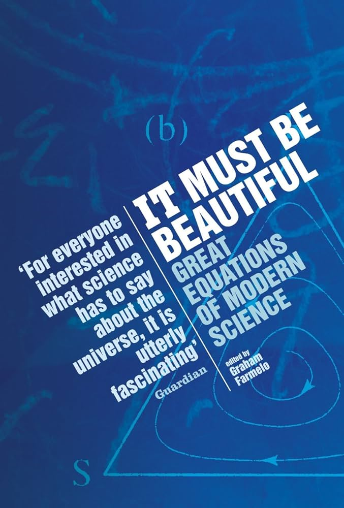

It must be beautiful, edited by Farmelo
Sunday November 19, 2023
This is a nice collection of essays about some beautiful equations, edited by the author of a biography of Dirac. Not every equation is fully explained, but there's great history and big-picture explanation. The authors are frequently major contributors to the fields.
- The Planck-Einstein Equation for the Energy of a Quantum: \( E = hf\)
- The Logistic Map: \( x_{next} = a x_{initial} (1 - x_{initial}) \)
- The Drake Equation: \( N = R^* \cdot f_p \cdot n_e \cdot f_l \cdot f_i \cdot f_c \cdot L \)
- \( E = m c^2 \)
- The Molina-Rowland Chemical Equations
- \( CFCl_3 \rightarrow CFCl_2 + Cl \)
- \( Cl + O_3 \rightarrow ClO + O_2 \)
- \( ClO + O \rightarrow Cl + O_2\)
- Schrödinger's Wave Equation: \( \hat{H} \psi = E \psi \)
- The Dirac Equation: \( \left[ \gamma^\mu \left( i \frac{\partial}{\partial x^\mu} - e A_\mu (x) \right) + m \right] \psi (x) = 0 \)
- Evolutionarily Stable Strategy: \( E(S, S) > E(T, S) \)
- The Einstein Equation of General Relativity: \( R_{ab} - \frac{1}{2}Rg_{ab} = -8\pi G T_{ab} \)
- Shannon's Equations
- \( I = -p \log_2 p \)
- \( C = W \log_2 (1 + S/N) \)
- The Yang-Mills Equation: \( \partial \mathbf{f}_{μν} / \partial x_ν + 2 \varepsilon (\mathbf{b}_ν \cdot \mathbf{f}_{μν}) + \mathbf{J}_μ = 0 \)

"It was in large part thanks to this [logistic map] equation, one so simple that children can study it at school, that scientists in the 1970s came to see that some equations that appear to predict the future in terms of the past are completely unable to make such predictions, contrary to what most scientists had thought." (page xvii)
Maybe children should study it at school, if they're not, currently...
See also: psychohistory
"The [wave-particle] problem's resolution came in the late 1920s, when physicists developed quantum theory into what became known as quantum field theory, which made possible a unified description of radiation and matter." (page 24)
Period three implies chaos is one of the best paper names of all time.
"Avoiding detailed assumptions about this or that feature of the way particular objects were built or interacted, Einstein's theory hardly resembled the work of senior physicists of the time. Instead, it had an outsider's style—or perhaps a return to an older form of clarity." (page 75)
"The sense of aesthetics that Shcrödinger alludes to here is his preference for a mathematics that is more familiar and also not as ugly as Heisenberg's 'transcendental algebra' (or matrices), but which also permits visualizability of atomic processes." (page 117)
Transcendental algebra?
"In the pantheon of twentieth-century physics, Heisenberg is second only to Einstein." (page 129)
Feel like somebody told me that was Dirac...
"As the physicist who did more to delve into the foundations of quantum theory than anyone else since Bohr, Einstein and Heisenberg, John Bell, once put it, 'for all practical purposes' quantum mechanics works well. He forcefully reminded us, however, that we still do not fully understand the Schrödinger equation." (page 131)
The citation here is Against 'measurement', which is straight FIRE.
"Is it really possible, by logical processing or calculation, to arrive at essentially new insights—to get out more than you put in?
"This question is especially timely today, since it lies at the heart of debates regarding the nature of machine intelligence—whether it may develop into a species of mind on a par with human intelligence, or even its eventual superior." (pages 155-156)
This was in 2002.
"They [Dirac, Maxwell, Einstein] proceed by experimental logic. That concept is an oxymoron only on the surface. In experimental logic, one formulates hypotheses in equations, and experiments with those equations. That is, one tries to improve the equations from the point of view of beauty and consistency, and then checks whether the 'improved' equations elucidate some feature of nature. Mathematicians recognize the technique of 'proof by contradiction': to prove A, you assume the opposite of A, and reach a contradiction. Experimental logic is 'validation by fruitfulness': to validate A, assume it, and show that it leads to fruitful consequences. Relative to routine deductive logic, experimental logic abides by the Jesuit credo: 'It is more blessed to ask forgiveness than permission.'" (page 159)
"Creative mathematics and physics rely not on perfect logic, but rather on an experimental logic. Experimental logic involves noticing patterns, playing with them, making assumptions to explain them, and—especially—recognizing beauty."
Abduction? With guess-and-check? And aesthetics?
"As the anthropologists Robert Boyd and Peter Richerson once remarked, ‘To replace a world you do not understand by a model of the world you do not understand is no advance.’" (page 165)
"There are questions that are too hard to think about without the aid of mathematics." (page 179)
In fact, in the four dimensions of space-time, there are twenty independent components to the curvature, and these can be collected together to describe a mathematical entity referred to as the 'Rieman curvature tensor'. (page 191)
"In 1918, the young German mathematician Emmy Noether discovered a deeply fundamental relationship between symmetry and the conservation of physical quantities, such as electric charge. She found that for every conserved quantity there is a related symmetry—and vice versa." (page 236)
"In an essay on 'Beauty and theoretical physics,' Yang quotes Heisenberg as saying in 1973, 'We will have to abandon the philosophy of Democritus and the concept of elementary particles. We should accept instead the concept of fundamental symmetries.'" (page 251)
Dirac has a paper called "Pretty mathematics."
Something about the Einstein summation convention...